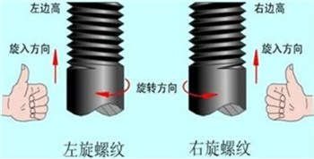
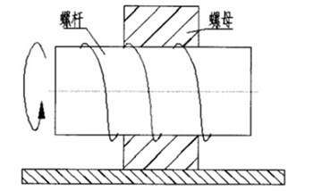
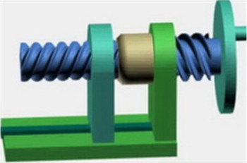
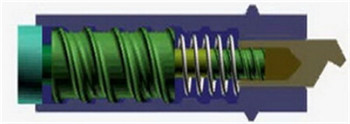

大多数情况下，螺旋传动用于把旋转运动转换成直线运动，那么直线移动的方向该如何判定呢？
1.普通螺旋传动
由单个螺杆和螺母组成的简单螺旋副实现的传动称为普通螺旋传动。根据不同的机构形式，有两种情况：一是螺杆（或螺母）既做主动回转运动，又做直线移动；二是螺杆（或螺母）做主动回转运动，螺母（或螺杆）做直线移动。
在普通螺旋传动中，关于主动件或从动件的直线移动方向判定问题，我们可以简单归纳为三个步骤。
1.判断旋向。沿着轴线的方向观察，螺纹左边高的为左旋螺纹，螺纹右边高的为右旋螺纹。如图1所示。需要注意的是，相互旋合的内、外螺纹的旋向必定是一致的。
图1 螺纹旋向的判定
2.在已知螺纹旋向的情况下，若判断对象为左旋螺纹副则拿出左手，若判断对象为右旋螺纹副则拿出右手。手握空拳，竖起大拇指，摆出如图1中所示的手势。最后四指指向主动件回转方向。
3.若螺杆在轴线方向上不能移动，而螺母可以移动。则按步骤二摆出的手势的大拇指指向的反方向为螺母移动的方向。若螺母是完全固定的，而螺杆在轴线方向上可以移动，那么大拇指指向则为其直线移动方向。（螺母和螺杆可以理解为两个具有相对运动趋势的物体）
如图2所示，螺杆按图示方向旋转的时候，根据普通螺纹直线移动方向判定的三个步骤可知：主动件螺杆的移动趋势为向右，从动件螺母的移动趋势向左。
图2 普通螺纹直线移动方向判定
若该螺旋机构螺纹导程（螺距和螺纹头数的乘积）为l，且螺母轴向可移动，螺杆不行。当螺杆按图示方向转过角度ϕ，螺母将沿螺杆轴向左移动一段距离：
S=lϕ/（2π）
2.差动螺旋机构和复式螺旋机构
差动螺旋机构和复式螺旋结构均是由两个简单的普通螺旋机构复合而成不同的是组成差动螺旋机构的两个普通螺旋机构的螺纹旋向相同，而组成复式螺旋机构的两个普通螺旋机构的螺纹旋向相反。下图变为典型的差动螺旋机构和复试螺旋机构。
图3 车床进给螺旋机构（复式螺旋机构）
图4 千分尺用螺旋机构（差动螺旋机构）
判断差动螺旋机构和复式螺旋机构的移动件移动方向和距离的方法和普通螺旋机构基本一致，只是多了一个叠加或相减的过程，这里不再赘述。希望同学们课下通过计算判断它们移动件的移动方向和距离，思考差动螺旋机构和复式螺旋机构的功能区别和应用领域区别。